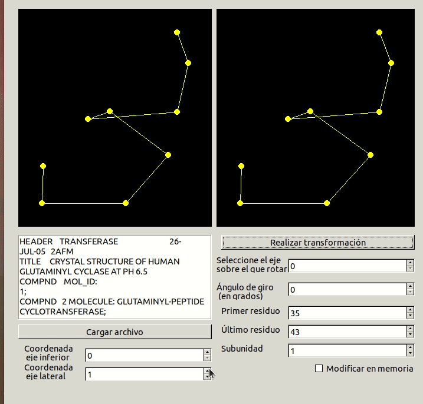
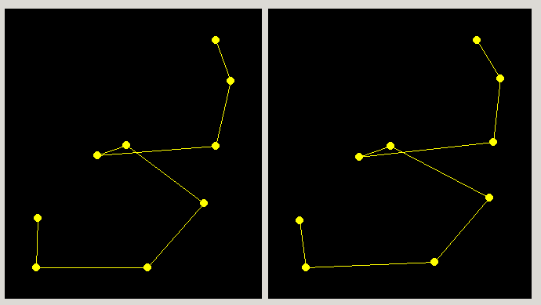
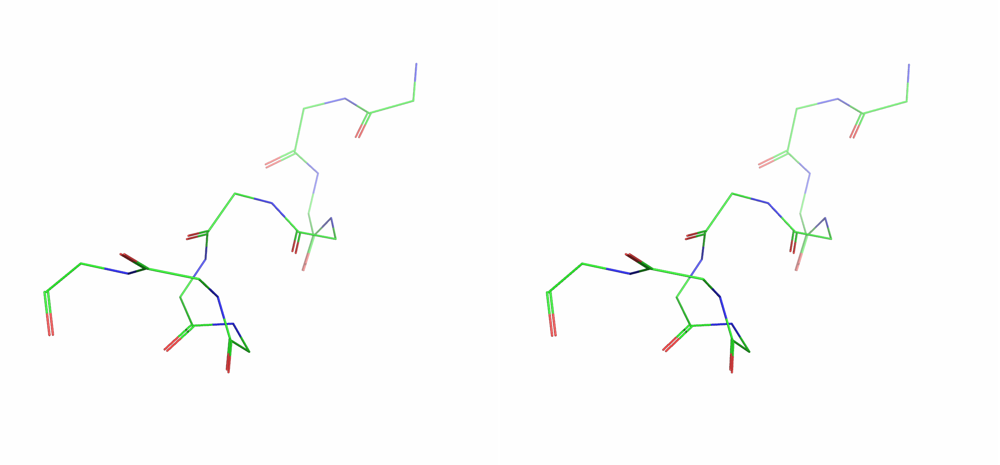

Estereodiagrama¶
En la realización de este cuaderno de actividades se pide el desarrollo de una aplicación capaz de crear un estereodiagrama correspondiente a un fragmento definido de la proteína. El código correspondiente a las funciones utilizadas para transformar (traslación y giro) las coordenadas se encuentran en la librería biotools/src_biotools y la aplicación bajo el nombre de estereodiagrama. Este apartado se corresponde a la 7ª actividad de la relación de ejercicios.
Funciones de transformación¶
En primer lugar, se desarrollaron una serie de funciones capaces de realizar transformaciones a un conjunto de coordenadas. Estas funciones, que fueron desarrolladas en clase, tienen distintas versiones sobrecargadas de manera que se pueda trasladar tanto un punto en el espacio, TPunto, un array dinámico TPuntos como un TPDB. En los siguientes bloques de código se ha escogido una serie de funciones representativas de este pequeño módulo 'espacial' desarrollado.
Además, se realizó la siguiente propuesta de mejora al código desarrollado en clase para las funciones relativas a girar. Se trató de implementar una función más genérica llamada girarTpuntos que recibiera tanto un ángulo en radianes como una función capaz de girar un vector en el espacio y que aplicara dicha transformación a todos los vectores del array. Esta idea podría ser implementada de forma más genérica con una función que recibiese como argumentos el array a transformar y una función transformadora y se obtendría así un código más claro y conciso. Para escribir esta función fue necesario definir una nueva clase llamada TTransformTPuntoFunc.
Estereodiagrama¶
Un estereodiagrama es un tipo de representación donde se muestra una imagen en dos dimensiones rotada en torno al eje Y (por defecto) un pequeño ángulo (por defecto 5º) de manera que al visualizarse las dos una al lado de la otra se aprecie cierta tridimensionalidad.
Aplicación Free Pascal/Lazarus¶
Nuestra aplicación deberá tener, entonces, una interfaz que permita al usuario seleccionar un fragmento de la proteína y un ángulo de giro, así como dos paneles donde se muestre gráficamente el resultado de la transformación. Además de esto, se han llevado a cabo las siguientes mejoras sobre lo realizado en clase:
- Opción para modificar el archivo en memoria y poder realizar así transformaciones sucesivas.
- Opción para elegir el eje sobre el se va a girar.
- Restricción del rango de residuos que el usuario puede elegir como fragmento según la subunidad elegida. De esta manera, cuando el archivo PDB se carga en el programa, se actualiza el rango de subunidades que se pueden elegir y, cada vez que el usuario elige una nueva subunidad, los valores mínimos y máximos de las casillas de primer y último residuo se actualizan para que solo sean elegibles residuos de dicha subunidad.
A continuación, mostramos el procedimiento empleado para transformar las coordenadas espaciales iniciales según las indicaciones del usuario (o las coordenadas espaciales resultantes de la última transformación, si así se indica). Hemos incluido este procedimiento porque nos parecía relevante mostrar un ejemplo de uso de la función girarTpuntos() puesto que tiene ciertas peculiaridades en la sintaxis y para poder mostrar la solución que encontramos para evitar posibles errores que podían surgir al realizar transformaciones en memoria (si se cambiaba el array de TPuntos inicial o si todavía no se había definido).
Demostración de uso¶
A continuación, mostramos el funcionamiento del programa con un fragmento de un \(\alpha\) hélice.
|  |
|---|
Figura 1. Animación del programa Estereodiagrama mostrando su uso. |
Verificación con función de visión estereoscópica¶
Por último, y para comprobar que nuestra representación es correcta, vamos a comparar el estereodiagrama obtenido con la herramienta de visión estereoscópica del programa PyMol. Mostramos a continuación el estereodiagrama realizado con nuestra aplicación Free Pascal/Lazarus:
|  |
|---|
| Figura 2. Estereodiagrama de los residuos 35 a 43 de la proteína 2AFM, mostrando las coordenadas \(y\) frente a \(x\). La imagen de la derecha ha sido rotada 5º en el eje de la \(y\) respecto a la imagen de la izquierda. |
Por último, se muestran en la siguiente imagen una representación de la cadena principal de los mismos residuos, 35 a 43, de la proteína 2AFM después de aplicar la opción stereo crosseye del programa PyMol. Como se puede observar, aunque la orientación no es exactamente la misma, se puede apreciar cómo nuestro estereodiagrama se encuentra bien construido.
|  |
|---|
| Figura 3. Estereodiagrama realizado usando el programa PyMol para comprobar la calidad de nuestro estereodiagrama. |